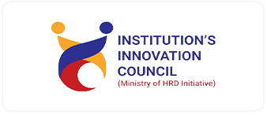
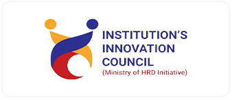
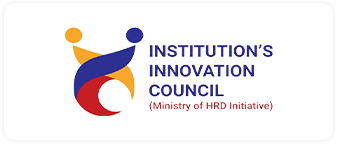

In Association with
Supported by
 

sagar institute of research and technology
(sirt)
department of information technology - computer science engineering & computer applications
Conference Dates : 3-4 June 2021
-----------------------------------------------------
Paper Submission : 25 May 2021
-----------------------------------------------------
Paper Acceptance : 30 May 2021
-----------------------------------------------------
Last Date of Registration : 2 June 2021
-----------------------------------------------------
Camera Ready Paper : 1 June 2021
Origional contribution from researhers describing their origional, unpublished and research contribution which is not currently under review by another conference or journal, are invited. Authors can submit their paper through easy chair link :
Click to Register
Sagar Institute of Research Technology Bhopal Ayodhya Bypass Road, Bhopal(M.P.) 462041 India
Phone : 0755 498 3100
Website : www.sirtbhopal.ac.in
The SAGE Group is a parent firm of various companies such as Agrawal construction co. Sagar Group of Institution, which includes 5 colleges and 2 schools in it. SAGE university , situated in Indore,and Bhopal Agrawal Power Pvt. Ltd.
The SAGE was not built all of sudden, it took years, where one by one brick added to its foundation and then over the years Agrawal succeed to project The SAGE in front of the world. The SAGE owns a range of residential sites, with the name of Agrawal Construction Co. wherein over 12,000 families are living in over 30 sites. And Is one of the best group in Bhopal to work. The beautiful and lavish range of residential sites is named as Sagar Green Hills, Sagar Pearl, Sagar Eden Garden, Sage Suncity and many others There are many people who are just a businessman, but Agrawal stands beside them because of the personality he is, an influencer, a spiritual person, a thinker, a giver and many others.
The Sagar Institute of Research & Technology is among top engineering colleges in Bhopal. It imparts top class education in Engineering, Management, Pharmacy, and Diploma. The field of technical education is full of design, creativity, and innovations. We at Sagar Group, Bhopal , promote students to develop their real-life projects so that they can learn and gain practical knowledge. Our students have developed 50+ national level projects in various courses. Our faculty members are highly skilled & specialized in their own area. The Sagar Institute of Research & Technology, Bhopal also known as Sagar Group of Institutions, is a group of best engineering college in Bhopal . It has a beautiful campus. The campus life of SIRT students is very exciting. They have many activities & opportunities to entertain themselves along with their academic curriculum. Campus life is very significant along with the regular curriculum of study for the holistic development of students. Sagar Group, Bhopal takes all measures for the overall top class development of its students. Here, students have many choices available to them like recreational facilities, hobby clubs under SAC, sports facilities and cultural activities, etc.
Explore more...The online National Conference on Advances in Information, Science and Technology (AIST-2021) is being organized by SIRT, Bhopal, India on 03 – 04 June 2021. The Two-day National Conference will include invited keynote and oral presentations. The AIST-2021 will provide a forum for researchers and engineers in both academia and industry to exchange the latest innovations and research advancements in Information, Science and Technology. AIST-2021 also provides the attendees the chances to identify the emerging research topics, as well as the future development directions. Accepted papers will be published in the proceedings. Best Paper/Demo Awards will be presented to high-quality papers/demos
Papers are solicited on all aspects of computational intelligence and related applications, from the points of view of both theory and practice. This includes, but is not limited to, the following topics with specific emphasis on the measurement aspects: Computational Intelligence, Evolutionary Techniques For Optimization & Logistics, Neural & Fuzzy Signal/Image Processing, Machine & Deep Learning, Human-computer Interaction, Intelligent Measurement Systems, Sensors & Displays , Intelligent Monitoring & Control Systems, Algorithms and Bioinformatics, Compiler Design, Computer Architecture and Real time Systems, Computer Education, Database and Data Mining, Dependable, Reliable and Autonomic Computing, Distributed and Parallel Systems & Algorithms, DSP/Image Processing/Pattern Recognition/Multimedia, Embedded System and Software, Game and Software Engineering, Geographical Information Systems/ Global Navigation Satellite Systems (GIS/GNSS), Information Technology Management, Intelligent Information & Database Systems, IT policy and Business Management, Mobile and Ubiquitous Computing, Modeling and Simulation, Multimedia Systems and Services, Natural Language Processing, Networking and Communications, Operating Systems, Performance Evaluation, Programming Languages, Security and Information Assurance, Soft Computing (AI, Neural Networks, Fuzzy Systems, etc.)Software Engineering, Theoretical computer science
Original contribution from researchers describing their
original, unpublished research contribution which is not
currently under review by another conference or journal,
are invited. Authors can submit thier paper through easy chair link :
Click to Register
Note: Selected paper will be published in ISBN Journal.
Registration Fees: 150/ for SAGE Member and 250 for Non-SAGE Members
Er. Sanjeev Agrawal
Chairman, SGI
